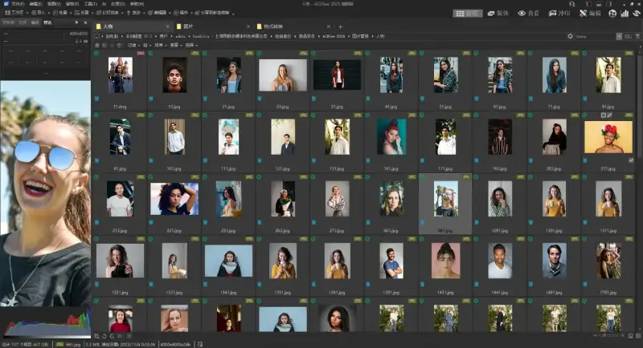
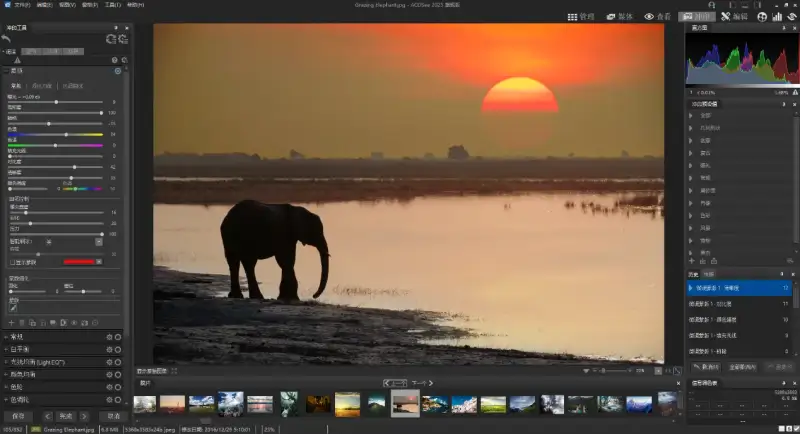
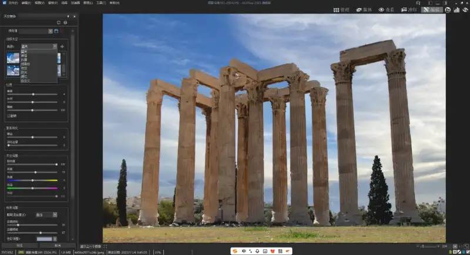
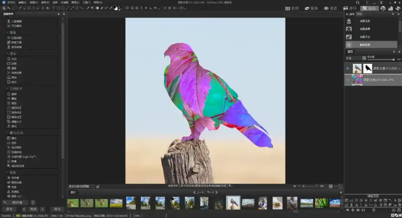
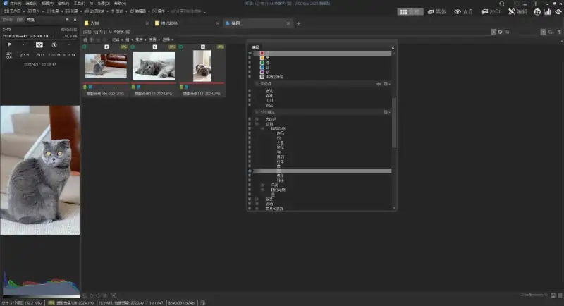

ACDSee 2025 Ultimate is an essential tool for every photographer and creative. It has the newest artificial intelligence (AI) features. They help you process large photo libraries fast, edit RAW files without loss at a pro level, and the layer editing adds depth to creative work.
Upgraded digital asset management: With the new ACDSee activity manager running in the background, you can focus more on the task at hand and become a leader in digital asset management (DAM).ACDSee The new tabs greatly simplify the DAM workflow. You open folders and search results in separate tabs, so you can navigate files easily and return at any time. All important files live in one workspace, which raises efficiency. You can now assign, unassign, or remove many keywords or categories at once, and add people and AI keywords for tighter control over metadata and a much simpler workflow.

AI super-resolution, better image quality without loss: The new AI super-resolution is a standout. It enlarges an image while keeping its quality. It can enhance a cropped shot or bring old photos back to life. And AI super-resolution works in batches, so you can apply it to many photos at once. You can boost low-resolution images with one click and prepare several files for large-format printing. The feature uses smart algorithms to raise quality, cut noise and blur, remove artifacts, keep fine detail, and raise contrast and sharpness for clearer, more precise images.
New improvements in Develop mode: In Develop mode, the redesigned mask group gives you endless non-destructive options. It adds many new tools, such as AI object mask, color range, and luminance range, plus the tools you already know and love, AI subject, AI background, AI sky, gradient, and brush. Together these tools let you handle complex selections easily and open up creative room.

GPU speed up, AI smoother AI editing: ACDSee 2025 uses the full power of the graphics processing unit (GPU) to greatly speed up AI-driven editing. This upgrade makes AI built-in tools such as AI mask, AI sky replacement, and the new AI super-resolution run much faster. Also, ACDSee the built-in local AI keeps your images on your device. Unlike other software, it never sends data to the cloud, which greatly improves privacy and security.
More AI features: AI Sky replacement now offers many surprising new skies, including new overcast and fireworks categories. You can swap the sky in a photo easily and create stunning scenes. In Manage mode, ACDSee tags further speed up digital asset management. Also, the new auto-advance in People mode moves the cursor to the next face after you press enter when naming a face. This saves the time and trouble of clicking each one, and faces can now be detected and shown up to 9999 , which greatly improves face detection. The new version also adds read and write support for AVIF files, giving excellent compression and high visual quality in a smaller file, so you stay at the front of image format trends.

Sync transfer:ACDSee Sync companion offers the simplest way to move photos and videos from your phone (iPhone and Android) to your PC/Windows PC/Windows computer. You can send files wirelessly from your mobile device straight to ACDSee , and the companion remembers what it already sent so you do not send it twice.
Layer editing: ACDSee is already a great tool for managing and editing images. It connects straight to your drives, auto-detects faces and key elements in photos, and auto-assigns AI keywords and runs AI face recognition, which cuts the tedious work of handling images. For layered editing, you can use images, text, shapes, AI driven editing tools, layer masks, and blend modes to enhance or transform photos, build artistic compositions, and bring creative ideas to life.

RAWlossless photo editing: In Develop mode, the new mask panel makes selections fast and easy. It has classic tools like the develop brush, linear gradient, and radial gradient, plus new one-click AI selection tools, such as AI subject, AI background, and AI sky, to make complex selections easy. Tools like the color and tone wheels, Light Equilibrium, and noise reduction let you correct color, fix light, and restore quality without changing the original image.
Core digital asset management: For digital asset management, ACDSee 2025 Ultimate offers full organizing, sorting, searching, and sharing. The strong AI keyword feature scans photos with AI and adds keywords by content, so you skip manual tagging. AI face recognition finds and names faces fast, and the software learns which name goes with each face, saving hours of browsing. It also finds duplicates and renames files in batches. With advanced search, such as and / or search, quick search, and dynamic category and keyword filters, you find what you need fast.

ACDSee 2025 Ultimate brings a range of strong new features and upgrades to classic tools. It gives you a one-stop solution from digital asset management to photo editing. Pros and enthusiasts alike get a fast, easy, and creative experience. If you have wanted a full-featured, powerful photo tool, take a look at ACDSee 2025 Ultimate. It may be the creative tool you have been looking for. Lately the ACDSee store has big discounts. Here is an extra 50 yuan coupon code: GENERAL0531. Valid from today -5.31 for extra savings on top of the sale.